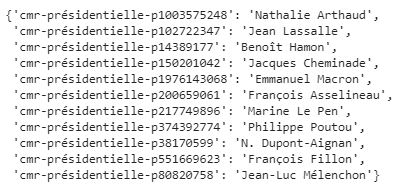
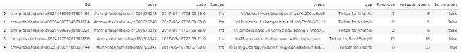
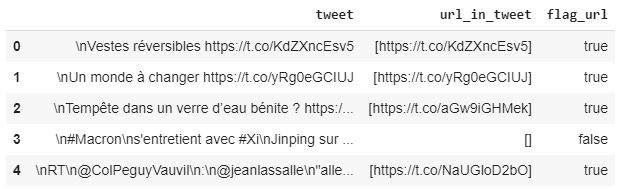
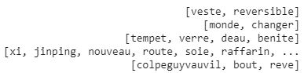
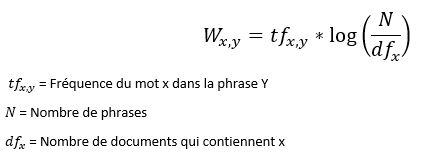
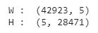
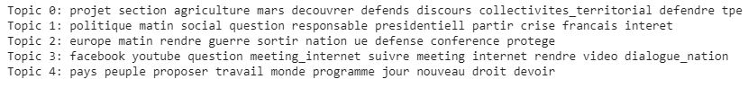

Analyse du language
Avec plus de 500 millions de tweets publiés chaque jours dans le monde, Le contenus des reseaux sociaux c'est transformer en un terrain de jeux pour l'analyse des données. De plus, l'accès à ces données est devenu très accessible grace au API que les principaux réseaux sociaux mettent à disposition. L'objectif de ce projet est de ce familiarisé avec les méthodes de traitement du language (NLP) en les appliquant sur les tweets publiés par les candidats à l'election présidentielle 2017 lors de la campagne.
Le Jeux de données
Le jeux de données de ce projet est mise à disposition par ORTOLANG, il rassemble l'enssemble des tweets publiés par les candidats lors de la campagne pour l'election presidentielle.
Importation des données
Le jeux de données est au format xml. Il est composé de deux parties, une première qui recenssent pour chaque candidats un identifant, nom et prenom. Un deuxième qui est composé des tweets et diverses informationsLes balises "person" correspondent à des candidats

Les balises "post" correspondent à des tweets

Grace à la library "ElementTree" nous allons extraire les données des balises qui nous interesses
data = et.parse("data/cmr-presidentielle2017-tei-v1.xml")
root = data.getroot()
def user_extract(user):
id_user = ""
name = ""
id_user = user.attrib
id_user = list(id_user.values())[0]
name = user[0][0].text
return([id_user,name])
Ensuite on utilise la fonction pour stocker les informations dans un dictionnaire
all_user = {}
for user in root[0][0][4][0]:
all_user[user_extract(user)[0]] = user_extract(user)[1]
On obtient le dictionnaire suivant :

On réalise la même opération pour les tweetsdef tweet_extract(tweet):
id_tweet = ""
user = ""
date = ""
langue = ""
tweet = ""
medium = ""
favoritecount = "0"
retweetcount = "0"
isretweet = "false"
tweet_paramettre = post.attrib
list_parametre = list(tweet_paramettre.values())
id_tweet = list_parametre[0]
user = list_parametre[1]
date = list_parametre[2]
langue = list_parametre[3]
tweet = "".join(post[0].itertext())
for i in post[1][0]:
if i.attrib['name']=="medium":
medium = i[0].text
if i.attrib['name']=="favoritecount":
favoritecount = i[0].attrib['value']
if i.attrib['name']=="retweetcount":
retweetcount = i[0].attrib['value']
if i.attrib['name']=="isRetweet":
isretweet = i[0].attrib['value']
return([id_tweet,user,date,langue,tweet,medium,favoritecount,retweetcount,isretweet])
All_tweet = []
for post in root[1][0][:]:
All_tweet.append(tweet_extract(post))
All_tweet = pd.DataFrame(All_tweet)
All_tweet.columns = ['id','user','date','langue','tweet','app','favorite','retweet_count','is_retweet']
All_tweet.head()

Extraction d'informations
En observant les tweets, nous avons remarqué que beaucoup de tweets faisaient réferances à des articles ou des pages internet grace à des liens url. Avant de commancer à netoyer les tweets, nous avons décidé d'extraire les liens dans une variable, et de créer une variable Flag_lien pour identifier la présence ou non d'un lien url dans le tweet.
#Extraction des liens
def extract_url(tweet):
return(re.findall(r"http\S+",tweet))
All_tweet["url_in_tweet"] = All_tweet.tweet.apply(extract_url)
# Création de la variable Flag_url
def flag_url(extract_url):
if len(extract_url)>0:
return("true")
else:
return("false")
All_tweet["flag_url"] = All_tweet.url_in_tweet.apply(flag_url)
All_tweet[["tweet","url_in_tweet","flag_url"]].head()

Netoyage des tweets
Lors d'un traitement NLP, trois étapes sont souvent réalisées afin de rendre les données exploitables.
Il existe plusieurs librairies permettant de réaliser la plupard de ces étapes (nltk, spacy, Torchtext, sklearn...). Pour ce projet, nous allons utiliser spacy et nltk pour réaliser ces trois étapes. Voici comment nous avons procédé
def normalisation(tweet):
doc = nlp(tweet)
tokens = []
for token in doc:
if token.is_stop==False and token.lemma_ not in chara_supp:
tokens.append(token.lemma_)
return(tokens)
All_tweet["tweet_normalize"] = All_tweet.tweet_netoye.apply(normalisation)
All_tweet["tweet_normalize"].head()

A noté qu'avant de réaliser ces étapes nous avons réaliser plusieurs transformations (Suppression des accents, Supression des liens URL, Suppression des #, Suppression des @, Suppression des "RT" au debut des retweets, Passage des tweets en minuscule, Supression des charactère spréciaux (chiffre, symbole...).A noté aussi qu'après l'étapes de lemmatisation, nous avons lister grace à la librairie nltk les principeux bi-grams et tri-grams. Afin de regrouper dans un même mot un groupe de mots ayant un sens significatif dans un tweet.
Topic Modeling
Maintenant que le tweets sont exploitables, nous allons appliquer une démarche de topic modeling. Pour ce faire nous avons besoin de transformer nos tweet en vecteur. Nous allons réaliser cet opération en grace à la fonction TfidfVectorizer de la librairie sklearn. cette fonction permet de transformer les tweets en vecteurs, mais aussi d'accorder un score de pertinence aux mots en fonction de la frequence d'un mot dans une phrase et de la fréquence du mots dans le corpus. Voici la formule qui permet de calculer ce score :

Voici comment appliquer cette méthode avec la fonction de sklearnfrom sklearn.feature_extraction.text import TfidfVectorizer
from sklearn.decomposition import NMF
tfidf_vectorizer = TfidfVectorizer()
tfidf = tfidf_vectorizer.fit_transform(tweet_sk)
tfidf.shape

Pour extraire une liste de topic, il suffit maintenant d'appliqué une méthode de réduction dimensionnelle sur notre matrice. Nous avons appliqué une factorisation par matrice non negatives (NMF). Appliquer une NMF sur une matrice X de taille x * y consiste à décomposer la matrice en deux nouvelles matrice W et H de taille (x,nb_component) et (nb_component,y) telle que le produits des deux nouvelles matrices aproche au mieux la matrice d'origine. Voici comment appliquer une NMF
nmf = NMF(n_components=5, random_state=1).fit(tfidf)
W = nmf.transform(tfidf)
Nous avons fixé le nombre de composentes arbitrairement à cinq pour cet exemple, mais nous aurions pu le determiner d'une manière plus mathématique.
Voici les deux matrice que nous obtenonsprint("W : ",W.shape)
print("H : ",nmf.components_.shape)

Les 5 Topic que nous obtenons correspondent donc au 5 dimentions de nos nos matrice en sortie de la NMF. Grace à la première matrice nous pouvons identifier les tweets qui représentent le plus chaque topic. Grace à la deuxième matrice nous pouvons sortir la liste des mots qui contribuent le plus à chaque topic.